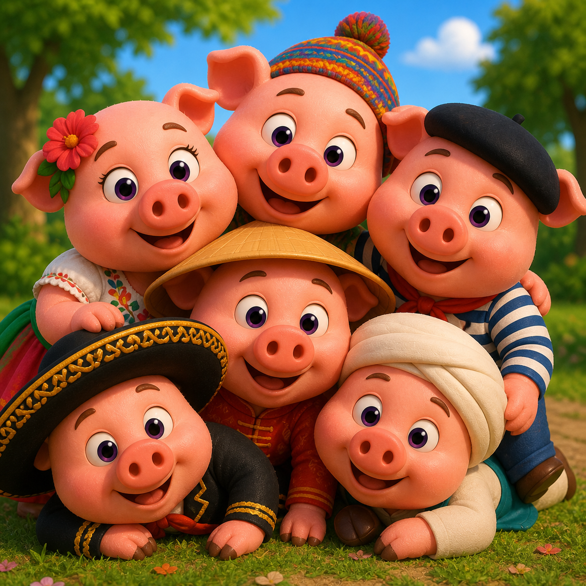

21 de mayo: Cultura, Innovación y Crecimiento
Diversidad cultural y educación financiera: una conversación pendiente
El 21 de mayo se conmemora el Día Mundial de la Diversidad Cultural para el Diálogo y el
Desarrollo proclamado por la Asamblea General de la ONU en 2002 a partir de la Declaración
Universal de la UNESCO sobre la Diversidad Cultural. Más allá del componente simbólico, la fecha
tiene una lectura económica concreta: el sector cultural y creativo representa cerca del 3.1%
del PIB y del 6.2% del empleo a nivel mundial.
Pero hay otra conversación, menos visible, que esta fecha permite abrir: la que vincula
diversidad cultural con inclusión y educación financiera.
Hablar de finanzas no es neutral. México es un país pluricultural con 68 lenguas indígenas
reconocidas, múltiples regiones, generaciones, géneros y contextos socioeconómicos. Cuando la
educación financiera se diseña desde una sola perspectiva (urbana, escolarizada,
hispanohablante, masculina), deja fuera a buena parte de la población a la que pretende servir.
El diálogo intercultural también es un asunto financiero. Reconocer la diversidad cultural en la
educación previsional implica:
Adaptar contenidos al lenguaje, los referentes y las prioridades de cada comunidad.
Escuchar cómo distintos grupos entienden el ahorro, el riesgo, el futuro y el cuidado
intergeneracional, en lugar de asumir un único modelo válido.
Diseñar materiales y servicios que sean pertinentes para mujeres, jóvenes, personas trabajadoras
de plataformas digitales, comunidades indígenas y poblaciones migrantes.
Una agenda compartida. La diversidad cultural no es un tema paralelo a la educación financiera:
es una de sus condiciones de posibilidad. Cerrar las brechas del Sistema de Ahorro para el
Retiro, de género, generacionales, regionales, pasa también, por reconocer que no existe una
sola manera de relacionarse con el dinero, ni una sola voz desde la cual enseñarlo.
Este 21 de mayo, celebrar la diversidad cultural es también recordar que una educación
financiera verdaderamente inclusiva empieza por escuchar.
